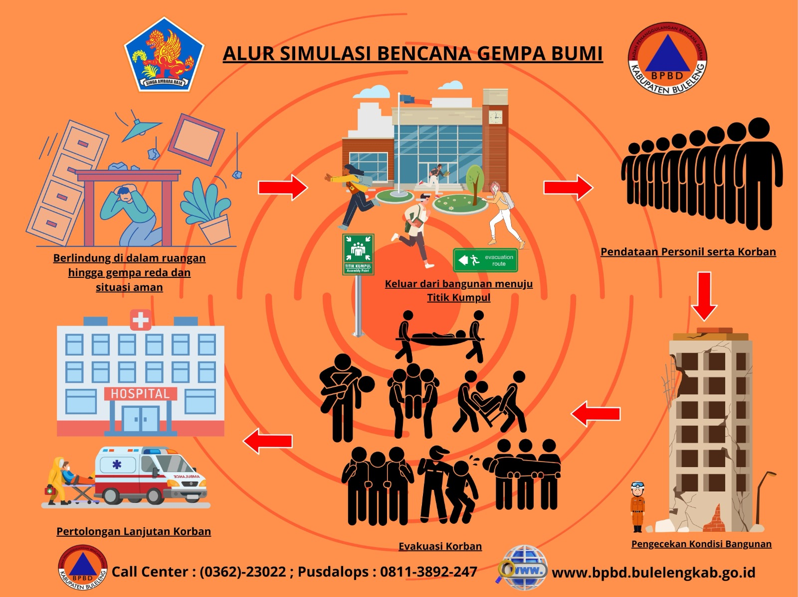

Dalam situasi bencana seperti gempa bumi, banjir, atau tsunami, penting untuk tetap tenang dan mengetahui langkah penyelamatan diri. Halaman ini menyediakan panduan yang jelas dan praktis untuk membantu pengguna bertindak dengan cepat dan aman dalam berbagai kondisi bencana.
Langkah-langkah penanganan banjir :
Segera menuju tempat yang lebih tinggi
Jika air mulai naik, jangan menunggu terlalu lama. Segera pindah ke tempat yang lebih tinggi seperti lantai atas rumah atau lokasi yang aman agar terhindar dari genangan yang semakin dalam.
Hindari area yang tergenang air
Air banjir bisa memiliki arus yang cukup kuat dan membawa benda berbahaya seperti kaca, kayu, atau sampah. Selain itu, air banjir biasanya kotor dan dapat menyebabkan penyakit.
Matikan aliran listrik jika memungkinkan
Untuk menghindari sengatan listrik, segera matikan listrik dari sumber utama jika air mulai masuk ke rumah. Jangan menyentuh alat listrik saat tangan basah atau berada di air.
Amankan barang-barang penting
Pindahkan dokumen penting (seperti KTP, ijazah), barang berharga, dan elektronik ke tempat yang lebih tinggi atau simpan dalam wadah tahan air.
Siapkan tas darurat (emergency kit)
Isi dengan kebutuhan penting seperti air minum, makanan instan, obat-obatan, senter, pakaian ganti, dan power bank agar siap jika harus mengungsi.
Ikuti informasi dan arahan dari pihak berwenang
Dengarkan informasi dari pemerintah atau petugas setempat mengenai kondisi banjir dan evakuasi. Jangan menyebarkan informasi yang belum jelas kebenarannya.
Gunakan alas kaki saat berada di air
Jika terpaksa harus melewati air, gunakan sepatu atau sandal untuk melindungi kaki dari benda tajam atau kotoran berbahaya.
Jauhi saluran air dan jembatan yang rapuh
Arus banjir bisa merusak struktur jembatan atau selokan. Hindari berada di dekatnya karena berisiko ambruk atau terseret arus.
Setelah banjir surut, tetap waspada
Bersihkan rumah dengan hati-hati, gunakan sarung tangan jika perlu, dan pastikan air serta makanan yang dikonsumsi sudah bersih agar terhindar dari penyakit.
Langkah-langkah penanganan tsunami :
Segera lari ke tempat yang lebih tinggi
Jika terjadi gempa kuat atau ada peringatan tsunami, langsung menuju tempat yang lebih tinggi seperti bukit atau gedung bertingkat. Jangan menunda karena waktu sangat terbatas.
Jangan menunggu atau kembali ke rumah
Jangan kembali untuk mengambil barang. Keselamatan diri jauh lebih penting daripada benda apa pun.
Jauhi pantai dan area laut
Setelah gempa atau tanda-tanda tsunami, segera menjauh dari pantai. Air bisa surut terlebih dahulu lalu datang kembali dengan gelombang besar.
Waspadai air yang datang tiba-tiba
Tsunami bisa datang tanpa banyak tanda. Gelombangnya kuat dan cepat, sehingga harus selalu siap untuk bergerak secepat mungkin.
Ikuti jalur evakuasi resmi
Gunakan rambu-rambu evakuasi yang sudah disediakan pemerintah. Jalur ini dirancang untuk membawa ke tempat yang lebih aman.
Menuju zona aman yang telah ditentukan
Pergilah ke titik kumpul atau zona aman (biasanya di dataran tinggi). Tetap di sana sampai ada informasi resmi bahwa kondisi sudah aman.
Bantu orang di sekitar jika memungkinkan
Jika ada anak kecil, lansia, atau orang yang kesulitan, bantu mereka untuk ikut evakuasi dengan cepat dan aman.
Ikuti informasi dari petugas
Dengarkan arahan dari pihak berwenang dan jangan mudah percaya pada informasi yang belum jelas kebenarannya.

src : BPBD Buleleng
Langkah-langkah penanganan gempa bumi :
Hindari Kepanikan dan Mencoba Tenang
Saat terjadi gempa bumi, penting untuk menjaga diri agar tetap tenang karena sikap tenang akan membuat kita bisa berpikir jernih mengenai tindakan apa yang harus dilakukan.
Jika berada di pusat keramaian seperti kantor, pusat perbelanjaan, hotel, dan telmpat lainnya, jangan menyebabkan kepanikan dan ikuti arahan petugas setempat.
Biasanya, di pusat keramaian sudah ada petunjuk jalur evakuasi,harus tetap mengikuti petunjuk dengan tertib.
Segera Keluar dari Bangunan
Jika memungkinkan, harus bisa sesegera mungkin keluar dari rumah atau gedung saat terjadi gempa bumi.
Gunakan Tangga Darurat
kalau menggunakan tangga darurat, ada beberapa hal yang perlu perhatikan. Pertama, berpeganglah pada sisi tangga. Kedua, jangan berlari.Berlari bisa meningkatkan risiko terjatuh saat sedang menuruni tangga. Ingakan ibu atau kakak untuk melepaskan sepatu hak tinggi karena bisa berbahaya.
Jangan Gunakan Lift
Jangan pernah menggunakan lift jika terjadi gempa bumi. Gempa bumi bisa membuat kita terjebak di dalam lift.
Jika merasa ada gempa dan berada di dalam lift, segeralah pencet semua tombol dan keluar ke lantai berapa pun.
Setelah pintu terbuka, segera cari tempat untuk berlindung. Namun, jika pintu tidak bisa dibuka, tekan tombol darurat dan hubungi petugas gedung melalui interphone dalam lift yang tersedia.
Berlindung dari Reruntuhan dalam Gedung
Jika berada di gedung yang tinggi dan tidak bisa segera keluar dari gedung, segera lindungi tubuh dari reruntuhan.
Berlindung di bawah meja, atau disudut ruangan yang kuat seperti dinding.
Hindarilah benda-benda yang bisa jatuh seperti jendela, lemari, atau barang lainnya. Jika berada di rumah dan sedang memasak, segera matikan kompor dan segera keluar dari rumah.Berikut beberapa situasi yang mungkin terjadi :
Tindakan di Area Terbuka
Jika gempa bumi terjadi saat ada di luar ruangan, menjauhlah dari bangunan, tiang listrik, pohon, papan reklame, atau benda-benda yang memiliki potensi rubuh akibat goncangan.
Lindungi kepala menggunakan benda apapun yang kita bawa.
Penting juga untuk memperhatikan tanah tempat berpijak. Jika terjadi retakan tanah, segera menjauh dan mencari tempat pijakan yang aman.
Tindakan Saat Berada di Dalam Mobil
Gempa bumi bisa membuat sopir kehilangan kendali atas mobil. Jika sedang terjadi gempa, segeralah berhenti ke kiri bahu jalan.
Harus segera turun dan menjauh dari mobil dan mencari tempat yang aman.
Tindakan Saat Berada di Pantai
Jika terjadi gempa bumi saat teman-teman ada di pantai, segera menjauh dari bibir pantai dan pergi ke tempat yang lebih tinggi.
Waspadai resiko terjadinya tsunami setelah gempa bumi.
Tindakan Saat Ada di Pegunungan
Jika terjadi gempa bumi saat teman-teman ada di pegunungan, segera hindari daerah yang memiliki potensi longsor.
Waspadai juga untuk tidak berdekatan dengan pepohonan tinggi yang berpotensi untuk roboh atau patah. Dan langsung cari tempat terbuka.